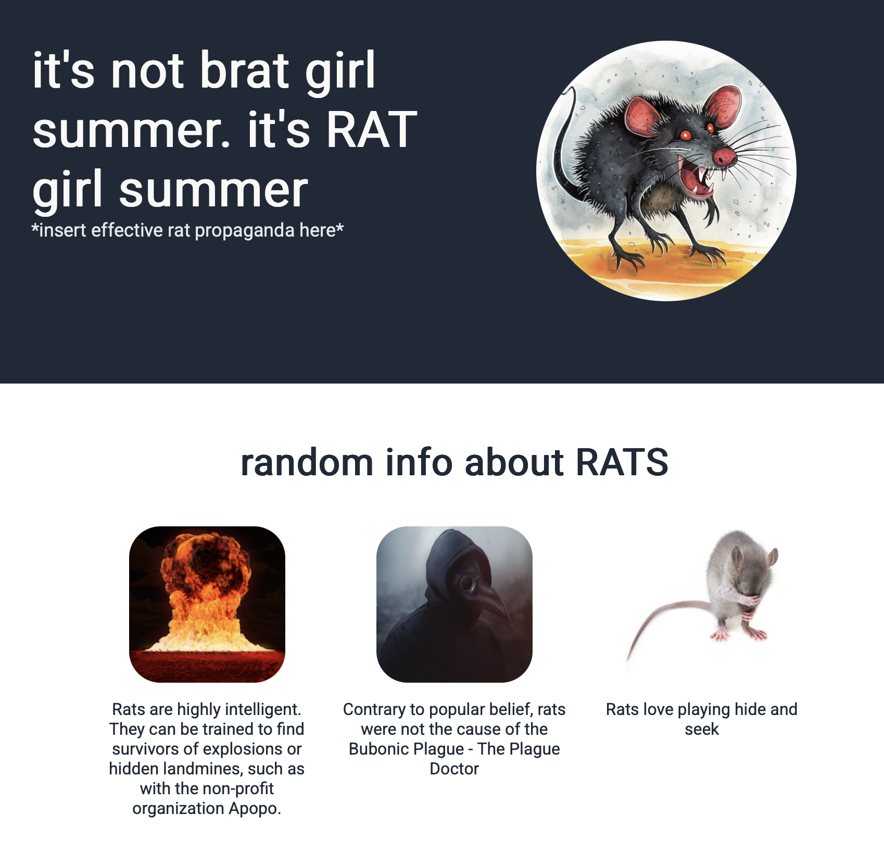
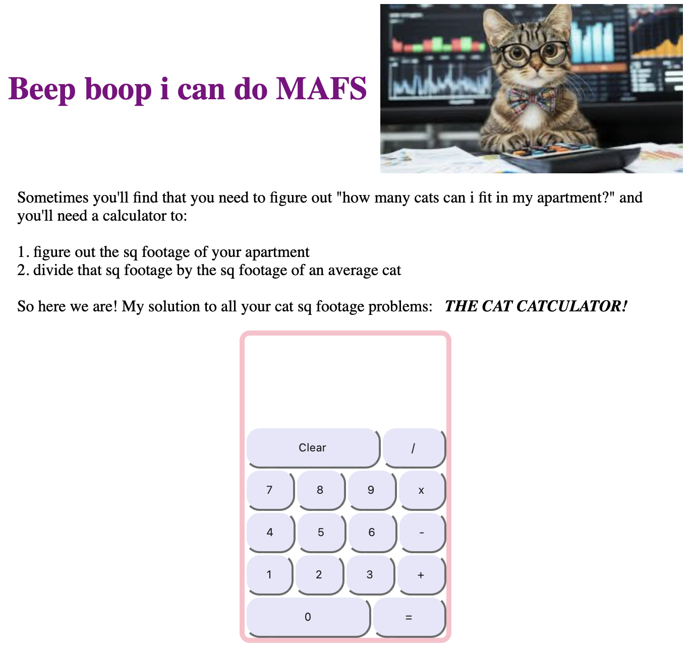

Here are some websites I've made for the funsies!

Living in NYC as an MTA commuter, rats are an integral part of my daily life. As a child, I had plenty of hamsters and they were just the cutest little animals - and rats are just their cousins! But for some reason they get such a bad rap. Anyway, I made a website solely dedicated to the destigmatization of rats.

For all of my cat lovers out here in NYC who don't know if they have the square footage to house a cute little kitty: I've developed a fully functioning cat calculator to solve all of your cat-math related issues!